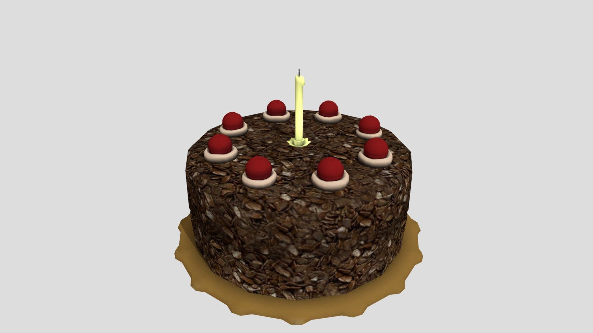

Cake

An absolute lie!
The cake is a lie. It is a fictional cake mentioned in the video game Portal.
Also, it is a famous dessert that is typically made with flour, sugar, eggs, and butter.
Ingredients
- 2 cups of flour
- 1 cup of sugar
- 3 eggs
- 1/2 cup of butter
- 1 teaspoon of vanilla extract
- 1 teaspoon of baking powder
- 1/2 teaspoon of salt
- 1 cup of milk
Instructions
- Preheat the oven to 350°F (180°C).
- In a large bowl, cream together the butter and sugar until light and fluffy.
- Add the eggs one at a time, beating well after each addition.
- Stir in the vanilla extract.
- In a separate bowl, combine the flour, baking powder, and salt.
- Add the dry ingredients to the wet ingredients, alternating with the milk.
- Pour the batter into a greased and floured cake pan.
- Bake for 30-35 minutes, or until a toothpick inserted into the center comes out clean.
- Let the cake cool in the pan for 10 minutes, then remove from the pan and cool completely on a wire rack.
Home